소음진동기사(구) (2020-06-06 기출문제)
1과목: 소음진동개론
1. 기계의 진동을 계측하였더니 진동수가 10Hz, 속도 진폭이 0.001m/s로 계측되었다. 이 진동의 진동가속도레벨은 약 몇 dB인가? (단, 기준진동의 가속도실효치는 10-5m/s2이다.)
- 37
- 40
- 73
- 76
(정답률: 알수없음)

2. 진동의 영향에 대한 설명으로 가장 적합한 것은?
- 배속 음식물이 심하게 오르락 내리락 하는 느낌은 1∼3Hz에서 주로 느낀다.
- 1∼3Hz에서 주로 호흡이 힘들고, O2 소비가 증가한다.
- 허리·가슴 및 등쪽에 아주 심한 통증을 느끼는 범위는 주로 13Hz이다.
- 대·소변을 보고 싶게 하는 범위는 주로 1∼3Hz이다.
(정답률: 55%)
3. 주파수 및 청력에 대한 설명으로 가장 거리가 먼 것은?
- 일반적으로 주파수가 클수록 공기흡음에 의해 일어나는 소음의 감쇠치는 증가한다.
- 청력손실은 피검자의 최대가청치와의 비를 dB로 나타낸 것이다.
- 사람의 목소리는 대략 100∼10000[Hz], 회화의 이해를 위해서는 500∼2500[Hz]의 주파수 범위를 갖춘다.
- 노인성 난청이 시작되는 주파수는 대략 6000[Hz]이다.
(정답률: 67%)
4. 다음 중 재질별 음속이 가장 빠른 것은? (단, 온도는 20℃이다.)
- 공기
- 담수
- 나무
- 강철
(정답률: 55%)
5. 배 위에서 사공이 물속에 있는 해녀에게 큰 소리로 외쳤을 때 음파의 입사각은 60°, 굴절각이 45°였다면 이 때의 굴절률은?
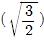
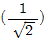
- 3/2
- 1/2
(정답률: 50%)
6. 옴의 법칙에 관한 다음 설명 중 옳지 않은 것은?
- 옴-헬름홀츠(Ohm-Helmholtz)법칙 : 인간의 귀는 순음이 아닌 소리를 들어도 각 주파수 성분으로 분해하여 들을 수 있는 능력이 있다.
- 웨버-페히너(Weber-Fechner)법칙 : 감각량은 자극의 대수에 비례한다.
- 양이효과(Binaural effect) : 인간의 귀는 양쪽에 있기 때문에 한쪽 귀로 듣는 경우와 양쪽 귀로 듣는 경우 서로 다른 효과를 나타낸다.
- 도플러(Doppler) 효과 : 하나의 파면상의 모든점이 파원이 되어 각각 2차적인 구면파를 산출하여 그 파면 등을 둘러싸는 면이 새로운 파면을 만드는 현상을 말한다.
(정답률: 59%)
7. M.K.S.단위계를 사용하는 감쇠 자유 진동계의 운동 방정식이
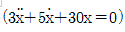
으로 표현될 때 이 진동계의 대수감쇠율은?- 0.3
- 1.7
- 5.0
- 19.0
(정답률: 47%)
8. 항공기 소음에 관한 설명으로 가장 거리가 먼 것은?
- 구조물과 지반을 통하여 전달되는 저주파영역의 소음으로 우리나라에서는 NNL을 채택하고 있다.
- 간헐적이며 충격적이다.
- 발생음량이 많고 발생원이 상공이기 때문에 피해면적이 넓다.
- 제트기는 이착륙 시 발생하는 추진계의 소음으로 금속성의 고주파음을 포함한다.
(정답률: 50%)
9. 스프링상수 100N/m, 질량이 10kg인 점성감쇠계를 자유진동 시킬 경우, 임계감쇠계수는 약 몇 N·s/m인가?
- 18
- 33
- 63
- 98
(정답률: 65%)
10. 진동에 관련된 표현과 그 단위(Unit)를 연결한 것으로 옳지 않은 것은?
- 고유각진동수 : rad/s
- 진동가속수 : dB(A)
- 감쇠계수 : N/(cm/s)
- 스프링 정수 : N/cm
(정답률: 67%)
11. 그림과 같이 진동하는 파의 감쇠 특성에 해당하는 것은? (단,
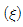
는 감쇠비이다.)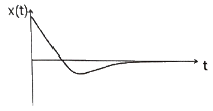
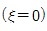
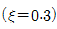
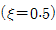
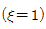
(정답률: 65%)
12. 다음 중 소음의 영향으로 거리가 먼 것은?
- 타액 분비량을 감소시키며, 위액산도를 증가시킨다.
- 말초혈관을 수축시키며, 맥박을 증가시킨다.
- 호흡 깊이를 감소시키며, 호흡 회수를 증가시킨다.
- 백혈구 수를 증가시키며, 혈중 아드레날린을 증가시킨다.
(정답률: 58%)
13. 중심주파수가 3150Hz일 때 1/3옥타브밴드 분석기의 밴드폭(Hz)은 약 얼마인가?
- 1860
- 1769
- 730
- 580
(정답률: 63%)
14. 인체의 청각기관에 관한 설명으로 옳지 않은 것은?
- 음을 감각하기까지의 음의 전달매질은 고체→기체→액체의 순이다.
- 고실과 이관은 중이에 해당하며, 망치뼈는 고막과 연결되어 있다.
- 외이도는 일단개구관으로 동작되며 음을 증폭시키는 공명기 역할을 한다.
- 이소골은 고막의 진동을 고체진동으로 변화시켜 외와 내이를 임피던스 매칭하는 역할을 한다.
(정답률: 60%)
15. 공장의 한 쪽 벽면이 가로 8m, 세로 3m일 때 벽 바깥면에서의 음압레벨이 87dB이다. 이 벽면에서 25m떨어진 지점에서의 음압레벨은 약 몇 dB인가?
- 53
- 58
- 63
- 68
(정답률: 58%)
16. 소음의 “시끄럼움(Noisiness)”에 관한 설명으로 옳지 않은 것은?
- 배경소음과 주소음의 음압도의 차가 클수록 시끄럽다.
- 소음도가 높을수록 시끄럽다.
- 충격성이 강할수록 시끄럽다.
- 저주파 성분이 많을수록 시끄럽다.
(정답률: 42%)
17. 소리를 듣는데 있어 이관(유스타키오관)의 역할에 대한 설명으로 가장 적합한 것은?
- 고막의 진동을 쉽게 하도록 기압을 조정한다.
- 음을 약화시켜 듣기 쉽게 한다.
- 내이에 공기를 보낸다.
- 소리를 증폭시킨다.
(정답률: 62%)
18. 대기조건에 따른 일반적인 소리의 감쇠효과에 관한 설명으로 옳지 않은 것은?
- 고주파일수록 감쇠가 커진다.
- 습도가 높을수록 감쇠가 커진다.
- 기온이 낮을수록 감쇠가 커진다.
- 음원보다 상공의 풍속이 클 때, 풍상 측에서 굴절에 따른 감쇠가 크다.
(정답률: 67%)
19. A공장 내 소음원에 대해 소음도를 측정한 결과 각각 92dB, 95dB, 100dB 였다. 이 소음원을 동시에 가동시킬 때의 합성 소음도는 약 몇 dB인가?
- 92
- 96
- 102
- 106
(정답률: 알수없음)
20. 실내 소음을 평가하기 위해 1/1옥타브 밴드로 분석한 음압레벨이 다음 표와 같다. 우선회화 방해레벨(PSIL)은 몇 dB인가?
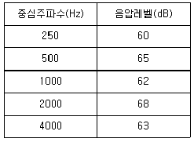
- 60
- 62
- 65
- 68
(정답률: 46%)
2과목: 소음방지기술
21. 엘리베이터와 거실이 근접하여 있는 경우 소음대책으로 적당하지 않은 것은?
- 기계는 건축물보에 지지하지 말고, 거실벽에 직접 지지하고, 승강로벽 및 승강로와 인접한 거실벽의 두께는 120mm 이상으로 한다.
- 승강로를 2중벽으로 하여 그 사이에 흡음재로 시공한다.
- 기계실과 최상층 거실 사이에 창고, 설비실 등으로 설계한다.
- 승강로벽 부근에 화장실 등의 부대설비를 설치하고 거주공간은 승강로벽으로부터 떨어지게 배치한다.
(정답률: 50%)
22. 공동주택의 급배수 설비소음 저감대책으로 가장 거리가 먼 것은?
- 급수압이 높을 경우에 공기실이나 수격방지기를 수전 가까운 부위에 설치한다.
- 욕조의 하부와 바닥과의 사이에 완충재를 설치한다.
- 거실, 침실의 벽에 배관을 고정하는 것을 피한다.
- 배수방식을 천장배관방식으로 한다.
(정답률: 72%)
23. STC 값을 평가하는 절차에 관한 설명 중 ( )안에 알맞은 것은?
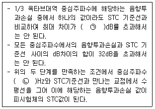
- ㉠ 3, ㉡ 500
- ㉠ 3, ㉡ 1000
- ㉠ 8, ㉡ 500
- ㉠ 8, ㉡ 1000
(정답률: 40%)
24. 발파소음의 감소대책으로 옳지 않은 것은?
- 완전전색이 이루어지도록 하여야 한다.
- 기폭방법에서는 역기폭보다는 정기폭을 사용한다.
- 도폭선 사용을 피한다.
- 주택가에서는 소할발파에 부치기 발파를 하지 않아야 한다.
(정답률: 50%)
25. 가로×세로×높이가 각각 6m×7m×5m인 실내의 잔향시간이 1.7초였다. 이 실내에 음향파워레벨이 98dB인 음원이 있을 경우 이 실내의 음압레벨은 약 몇 dB인가?
- 85.6
- 90.6
- 100.4
- 1⑤.4
(정답률: 25%)
26. 두께 0.25m, 밀도 0.18×10-2kg/cm3의 콘크리트 단일벽에 63Hz의 순음이 수직입사할 때, 이 벽의 투과손실은 약 몇 dB인가? (단, 질량법칙이 만족된다고 본다.)
- 26
- 36
- 46
- 56
(정답률: 50%)
27. 자유공간에서 중심주파수 125Hz로부터 10dB이상의 소음을 차단할 수 있는 방음벽을 설계하고자 한다. 음원에서 수음점까지의 음의 회절경로와 직접경로 간의 경로차가 0.67m라면 중심주파수 125Hz에서의 Fresnel number는? (단, 음속은 340m/s이다.)
- 0.25
- 0.39
- 0.49
- 0.69
(정답률: 50%)
28. 덕트 소음대책 시 고려사항으로 거리가 먼 것은?
- 공기분배시스템은 저항을 최대로 하는 방향으로 설계해야 한다.
- 송풍기 선정 시 최소 소음레벨을 갖는 송풍기를 선정해야 한다.
- 익의 개수가 적은 송풍기 일수록 순음에 가깝고 이 순음이 스펙트럼 전반에 지배적이다.
- 송풍기 입구와 출구에서 덕트를 연결할 때에는 공기 유동이 균일하고 회전이 없도록 해야 한다.
(정답률: 60%)
29. 팽창형 소음기의 입구 및 팽창부의 직경이 각각 55cm, 125cm일 때, 기대할 수 있는 최대투과손실은 약 몇 dB인가?
- 2.6
- 5.6
- 8.6
- 15.6
(정답률: 50%)
30. 벽면 또는 벽상단의 음향특성에 따라 분류한 방음벽의 유형으로 옳지 않은 것은?
- 밀착형
- 반사형
- 공명형
- 흡음형
(정답률: 60%)
31. 소음대책을 전달경로 대책과 수음자 대책으로 구분할 때, 다음 중 수음자 대책에 주로 해당하는 것은?
- 차음벽 등을 설치하여 소음의 전달경로를 바꾸어 준다.
- 흡음재를 부착하여 음향에너지의 감쇠를 증가시킨다.
- 공기조화 장치의 덕트에 흡·차음재를 부착한다.
- 작업공간에 방음부스 등을 설치한다.
(정답률: 44%)
32. 판진동에 의한 흡음주파수가 100Hz이다. 판과 벽체 사이 최적 공기층이 32mm일 때, 이 판의 면밀도는 약 몇 kg/m2인가? (단, 음속은 340m/s, 공기밀도는 1.23kg/m3 이다.)
- 11.3
- 21.5
- 31.3
- 41.5
(정답률: 42%)
33. 그림과 같은 방음벽에서 직접음의 회절감쇠기가 12dB(A), 반사음의 회절 감쇠치가 15dB(A), 투과 손실치가 16dB(A)이다. 이 방음벽의 삽입 손실치는 약 몇 dB(A)인가?
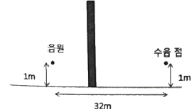
- 9.2
- 11.2
- 14.2
- 16.2
(정답률: 70%)
34. 파이프 반경이 0.5m인 파이프 벽에서 전파되는 종파의 전파속도가 5326m/s인 경우 파이프의 링 주파수는 약 몇 Hz인가?
- 1451.6
- 1591.5
- 1695.3
- 1845.9
(정답률: 24%)
35. 유공판 구조체의 흡음특성에 대한 설명으로 가장 거리가 먼 것은?
- 유공판 구조체는 개구율에 따라 흡음특성이 달라진다.
- 유공판 구조체의 판의 두께, 구멍의 피치, 직경 등에 따라 흡음특성은 달라진다.
- 유공석고보드, 유공하드보드 등이 해당되며, 흡음영역은 일반적으로 중음역이다.
- 배후에 공기층을 두고 시공하면 그 공기층이 두꺼울수록 특정 주파수영역을 중심으로 뽀죡한 산형파크를 나타내고, 얇을수록 이중피크를 보인다.
(정답률: 59%)
36. 어느 시료의 흡음성능을 측정하기 위해 정재파관내법을 사용하였다. 1000Hz 순음인 사인파의 정재파비가 1.6이었다면 이 흡음재의 흡음율은?
- 0.913
- 0.931
- 0.947
- 0.968
(정답률: 43%)
37. 소음기의 성능을 나타내는 용어 중 소음기가 있는 그 상태에서 소음기의 입구 및 출구에서 측정된 음압레벨의 차로 정의되는 것은?
- 동적삽입 손실치
- 투과손실치
- 감쇠치
- 감음량
(정답률: 42%)
38. 방음벽 설계 시 고려사항으로 가장 거리가 먼 것은?
- 방음벽에 의한 현실적 최대 회절감쇠치는 점음원의 경우 24dB, 선음원의 경우 22dB 정도로 본다.
- 점음원의 경우 방음벽의 길이가 높이의 5배 이상이면 길이의 영향은 고려하지 않아도 된다.
- 음원측 벽면은 될 수 있는 한 흡음처리하여 반사음을 방지하는 것이 좋다
- 방음벽의 모든 도장은 전광택으로 반사율이 30% 이하여야 한다.
(정답률: 50%)
39. 단일벽의 일치 효과에 관한 설명으로 옳지 않은 것은?
- 벽체의 굴곡운동에 의해 발생한다.
- 벽체의 두께가 상승하면 일치효과 주파수는 상승한다.
- 벽체의 밀도가 상승하면 일치효과 주파수는 상승한다.
- 일치효과 주파수는 벽체에 대한 입사음의 각도에 따라 변동한다.
(정답률: 43%)
40. 공동공명기형 소음기의 공동 내에 흡음재를 충진할 경우에 감음특성으로 가장 적합한 것은?
- 저주파음 소거의 탁월현상이 증가되며 고주파까지 효과적인 감음특성을 보인다.
- 저주파음 소거의 탁월현상은 완화되지만 고주파까지 거의 평탄한 감음특성을 보인다.
- 고주파음 소거의 탁월현상은 완화되지만 저주파까지 효과적인 감음특성을 보인다.
- 고주파음 소거의 탁월현상이 증가되며 저주파에서는 일정한 감음특성을 보인다.
(정답률: 9%)
3과목: 소음진동 공정시험 기준
41. 항공기소음한도 측정방법에 관한 설명으로 옳지 않은 것은?
- KS C IEC61672-1에 정한 클래스 2의 소음계 또는 동등 이상의 성능을 가진 것이어야 한다.
- 소음계의 청감보정회로는 A특성에 고정하여 측정하여야 한다.
- 소음계와 소음도기록기를 연결하여 측정·기록하는 것을 원칙으로 하되, 소음도 기록기가 없는 경우에는 소음계만으로 측정할 수 있다.
- 소음계의 동특성을 빠름(fast)모드를 하여 측정하여야 한다.
(정답률: 65%)
42. 발파소음 측정자료 평가표 서식에 기록되어야 하는 사항으로 거리가 먼 것은?
- 폭약의 종류
- 1회 사용량
- 발파횟수
- 천공장의 깊이
(정답률: 50%)
43. 환경기준 중 소음측정방법에서 디지털 소음자동분석계를 사용할 경우 샘플주기는 몇 초 이내에서 결정하고, 몇 분 이상 측정하여야 하는가?
- 1초 이내, 5분 이상
- 5초 이내, 5분 이상
- 5초 이내, 10분 이상
- 10초 이내, 10분 이상
(정답률: 64%)
44. 압전형 진동픽업의 특징에 관한 설명으로 옳지 않은 것은? (단, 동전형 픽업과 비교한다.)
- 온도, 습도 등 환경조건의 영향을 받는다.
- 소형 경량이며, 중고주파대역(10kHz 이하)의 가속도 측정에 적합하다.
- 고유진동수가 낮고 (보통 10∼20Hz), 감도가 안정적이다.
- 픽업의 출력임피던스가 크다.
(정답률: 36%)
45. 다음은 규제기준 중 발파소음 측정평가에 관한 사항이다. ( )안에 알맞은 것은?
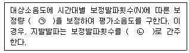
- ㉠ +10 log N : N＞1, ㉡ 1회
- ㉠ +10 log N : N＞1, ㉡ 2회
- ㉠ +20 log N : N＞1, ㉡ 1회
- ㉠ +20 log N : N＞1, ㉡ 2회
(정답률: 62%)
46. 진동배출허용기준 측정 시 측정기기의 사용 및 조작에 관한 설명으로 거리가 먼 것은?
- 진동레벨기록기가 없는 경우에는 진동레벨계만으로 측정할 수 있다.
- 진동레벨계의 출력단자와 진동레벨기록기의 입력단자를 연결한 후 전원과 기기의 동작을 점검하고 매회 교정을 실시하여야 한다.
- 진동레벨계의 레벨레인지 변환기는 측정지점의 진동레벨을 예비조사한 후 적절하게 고정시켜야 한다.
- 출력단자의 연결선은 회절음을 방지하기 위하여 지표면에 수직으로 설치하여야 한다.
(정답률: 42%)
47. 다음 중 측정소음도 및 배경소음도의 측정을 필요로 하는 기준은?
- 배출허용기준 및 동일건물 내 사업장소음 규제기준
- 환경기준 및 배출허용기준
- 환경기준 및 생활소음 규제기준
- 환경기준 및 항공기 소음한도기준
(정답률: 25%)
48. 다음은 도로교통진동관리기준의 측정시간 및 측정지점수 기준이다. ( )안에 알맞은 것은?
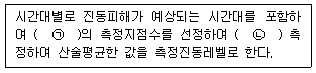
- ㉠ 2개 이상, ㉡ 4시간 이상 간격으로 2회 이상
- ㉠ 2개 이상, ㉡ 2시간 이상 간격으로 2회 이상
- ㉠ 1개 이상, ㉡ 4시간 이상 간격으로 2회 이상
- ㉠ 1개 이상, ㉡ 2시간 이상 간격으로 2회 이상
(정답률: 39%)
49. 배출허용기준 중 소음측정 시 측정시간 및 측정지점수 기준으로 옳은 것은?
- 피해가 예상되는 적절한 측정시각에 1지점을 선정·측정한 값을 측정소음도로 한다.
- 피해가 예상되는 적절한 측정시각에 2지점 이상의 측정지점수를 선정·측정하여 그 중 가장 높은 소음도를 측정소음도로 한다.
- 피해가 예상되는 적절한 측정시각에 3지점 이상의 측정지점수를 선정·측정하여 산술평균한 소음도를 측정소음도로 한다.
- 피해가 예상되는 적절한 측정시각에 4지점 이상의 측정지점수를 선정·측정하여 산술평균한 소음도를 측정소음도로 한다.
(정답률: 50%)
50. 환경기준 중 소음을 측정할 때 소음도를 손으로 잡고 측정할 경우 소음계는 측정자의 몸으로부터 얼마 이상 떨어져야 하는가?
- 0.1m 이상
- 0.3m 이상
- 0.5m 이상
- 1.0m 이상
(정답률: 67%)
51. 진동레벨 측정을 위한 성능기준 중 진동픽업의 횡감도의 성능기준은?
- 규정주파수에서 수감축 감도에 대한 차이가 1 dB 이상이어야 한다. (연직특성)
- 규정주파수에서 수감축 감도에 대한 차이가 5 dB 이상이어야 한다. (연직특성)
- 규정주파수에서 수감축 감도에 대한 차이가 10 dB 이상이어야 한다. (연직특성)
- 규정주파수에서 수감축 감도에 대한 차이가 15 dB 이상이어야 한다. (연직특성)
(정답률: 42%)
52. 철도진동한도 측정자료 분석에 대한 설명 중 ( )안에 가장 적합한 것은?
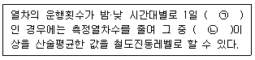
- ㉠ 5회 미만, ㉡ 중앙값
- ㉠ 5회 미만, ㉡ 조화평균값
- ㉠ 10회 미만, ㉡ 중앙값
- ㉠ 10회 미만, ㉡ 조화평균값
(정답률: 60%)
53. 소음계의 구조별 성능기준에 관한 설명으로 옳지 않은 것은?
- fast-slow switch : 지시계기의 반응속도를 빠름 및 느림의 특성으로 조절할 수 있는 조절기를 가져야 한다.
- amplifier : 동특성조절기에 의하여 전기에너지를 음향에너지로 변환시킨 양을 증폭시키는 것을 말한다.
- weighting networks : 인체의 청감각을 주파수 보정특성에 따라 나타내는 것으로 A특성을 갖춘 것이어야 한다. 다만, 자동차 소음측정용은 C특성도 함께 갖추어야 한다.
- microphone : 지향성이 작은 압력형으로 하며, 기기의 본체와 분리가 가능하여야 한다.
(정답률: 54%)
54. 소음한도 중 항공기소음의 측정자료 분석 시 배경소음보다 10dB이상 큰 항공기소음의 지속시간 평균치
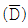
가 63초 일 경우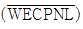
에 보정해야 할 보정량(dB)은?- 4
- 5
- 6
- 7
(정답률: 50%)
55. 다음 소음계의 기본 구성도 중 각 부분의 명칭으로 가장 적합한 것은? (단,
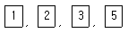
순이며, 4 교정장치, 6 동특성 조절기 7 출력단자, 8 지시계기이다.)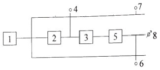
- 마이크로폰, 증폭기, 레벨레인지 변환기, 청감보정회로
- 마이크로폰, 청감보정회로, 증폭기, 레벨레인지 변환기
- 마이크로폰, 레벨레인지 변환기, 증폭기, 청감보정회로
- 마이크로폰, 청감보정회로, 레벨레인지 변환기, 증폭기
(정답률: 47%)
56. 소음측정에 사용되는 소음 측정기기의 성능기준으로 옳지 않은 것은?
- 측정가능 주파수 범위는 8 Hz ∼ 31.5 Hz 이상이어야 한다.
- 측정가능 소음도 범위는 35 Hz ∼ 130 Hz 이상이어야 한다.
- 자동차 소음측정을 위한 측정가능 소음도 범위는 45 Hz ∼ 130 Hz 이상으로 한다.
- 레벨레인지 변환기가 있는 기기에 있어서 레벨레인지 변환기의 전환오차가 0.5 dB 이내이어야 한다.
(정답률: 46%)
57. 규제기준 중 생활진동 측정방법에서 진동레벨기록기를 사용하여 측정할 경우 기록지상의 지시치의 변동폭이 5 dB 이내일 때 배경진동레벨을 정하는 기준은?
- 구간 내 최대치부터 진동레벨의 크기순으로 5개를 산술평균한 진동레벨
- 구간 내 최대치부터 진동레벨의 크기순으로 10개를 산술평균한 진동레벨
- L10 진동레벨 계산방법에 의한 L10값
- L5 진동레벨 계산방법에 의한 L5값
(정답률: 19%)
58. 다음은 소음·진동공정시험기준에서 정한 용어의 정의이다. ( )안에 알맞은 것은?
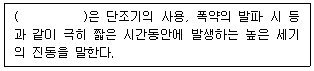
- 발파진동
- 폭파진동
- 충격진동
- 폭발진동
(정답률: 20%)
59. 다음은 배경소음 보정에 관한 내용이다. ( )안에 가장 적합한 것은?
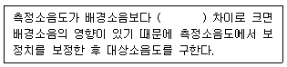
- 0.1 ∼ 9.9dB
- 1.0 ∼ 9.9dB
- 2.0 ∼ 9.9dB
- 3.0 ∼ 9.9dB
(정답률: 62%)
60. 소음·진동공정시험기준상 진동가속도레벨의 정의식으로 알맞은 것은? (단, a : 측정진동의 가속도 실효치(m/s2), a0 : 기준진동의 가속도 실효치(m/s2)로 10-5 m/s2 한다.)
- 10 log(a/a0)
- 20 log(a/a0)
- 30 log(a/a0)
- 40 log(a/a0)
(정답률: 64%)
4과목: 진동방지기술
61. 스프링 상수 k1=35N/m, k2=45N/m인 두 스프링을 그림과 같이 직렬로 연결하고 질량 m=4.5kg을 매달았을 때, 연직방향의 고유진동수는 몇 Hz인가?
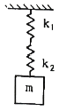
- 1.⑤/π
- 1.⑤π
- 1.16/π
- 1.16π
(정답률: 54%)
62. 자동차 진동 후 플로워 진동이라고도 불리며, 차량의 중속 및 고속주행 상태에서 차체가 약 15∼25Hz 주파수 범위로 진동하는 현상은?
- 시미(shimmy)
- 저크(jerk)
- 셰이크(shake)
- 와인드 업(wind up)
(정답률: 47%)
63. 방진을 위한 가진력 저감에 관한 설명으로 옳지 않은 것은?
- 회전기계 회전부의 불평형은 정밀 실험을 통해 교정한다.
- 기계, 기초를 움직이는 가진력을 감소시키기 위해 탄성지지 한다.
- 복수 개의 실린더를 가진 크랭크를 왕복동단일 실린더 기계로 교체한다.
- 단조기를 단압프레스로 교체하여 가진력을 감소시킨다.
(정답률: 62%)
64. 다음 중 물리적 거동에 따른 감쇠의 분류에 해당하지 않는 것은?
- 점성감쇠
- 구조감쇠
- 부족감쇠
- 건마찰감쇠
(정답률: 28%)
65. 방진고무의 특성에 관한 설명으로 옳지 않은 것은?
- 내부 감쇠저항이 적어, 추가적인 감쇠장치가 필요하다.
- 내유성을 필요로 할 때에는 천연고무는 바람직하지 못하고, 합성고무를 선정해야 한다.
- 역학적 성질은 천연고무가 아주 우수하나 용도에 따라 합성고무도 사용된다.
- 진동수비가 1 이상인 방진영역에서도 진동전달률은 거의 증대하지 않는다.
(정답률: 50%)
66. 정현진동에 있어서 진동의 정량적 크기를 표시하는 방법 중 가장 수치가 큰 것은?
- 평균치(Average)
- 전진폭(Peak to Peak)
- 실효치(Root mean square)
- 진폭(Peak)
(정답률: 47%)
67. 비감쇠 진동계에서 전달율 T를 10%로 하려면 진동수비(w/wn)는 얼마로 하여야 하는가?
- 1.5
- 2.7
- 3.3
- 4.2
(정답률: 72%)
68. 감쇠자유진동을 하는 진동계에서 진폭이 3사이클 뒤에 50% 감소되었다면, 이 계의 대수감쇠율은?
- 0.231
- 0.347
- 0.366
- 0.549
(정답률: 50%)
69. 무게 120N인 기계를 스프링 정수 30N/cm인 방진고무로 지지하고자 한다. 방진고무 4개로 4점 지지할 경우 방진고무의 정적수축량은 몇 cm인가? (단, 감쇠비는 무시한다.)
- 7.5
- 4
- 2
- 1
(정답률: 65%)
70. 그림과 같은 비틀림 진동계에서 축의 직경을 4밸로 할 때 계의 고유진동수 fn은 어떻게 변화되겠는가? (단, 축의 질량효과는 무시한다.)
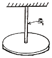
- 원래의 1/16
- 원래의 1/4
- 원래의 4배
- 원래의 16배
(정답률: 10%)
71. 다음 조건으로 기초 위 가대에 기계에 의한 조화파형 상하진동이 작용할 때 정적변위는 약 몇 cm인가?
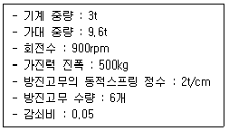
- 3.56×10-2
- 4.17×10-2
- 5.56×10-3
- 6.89×10-3
(정답률: 16%)
72. 서징에 관한 설명으로 옳은 것은?
- 탄성지지계에서 서징 발생 시 급격한 감쇠가 일어난다.
- 코일 스프링의 고유 진동수가 가진 진동수가 일치된 경우 일어난다.
- 서징은 방진고무에서 주로 나타난다.
- 서징이 일어나면 탄성지지계의 진동 전달률이 현저히 저하된다.
(정답률: 39%)
73. 운동방정식이
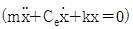
으로 표시되는 감쇠 자유진동에서 감쇠비를 나타내는 식으로 옳지 않은 것은? (단, Ce : 감쇠계수, wn : 고유 각진동수 이다.)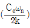
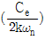
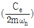
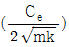
(정답률: 62%)
74. 진동에 의한 기계에너지를 열에너지로 변환시키는 기능은?
- 자유진동
- 모멘트
- 스프링
- 감쇠
(정답률: 알수없음)
75. 진동원에서 발생하는 가진력은 특성에 따라 기계회전부의 질량 불평형, 기계의 왕복운동 및 충격에 의한 가진력 등으로 대별되는데 다음 중 발생 가진력이 주로 충격에 의해 발생하는 것은?
- 단조기
- 전동기
- 송풍기
- 펌프
(정답률: 60%)
76. 그림과 같이 길이 ℓ, 강성도 EI인 외팔보의 자유단에 질량 m이 있는 경우 이 계의 고유진동수는? (단, 보의 무게는 무시한다.)
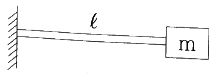
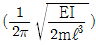
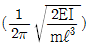
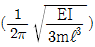
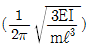
(정답률: 28%)
77. 기초 구조물을 방진설계 시 내진, 면진, 제진 측면에서 볼 때 “내진설계”에 대한 설명으로 옳은 것은?
- 지진하중과 같은 수평하중을 견디도록 구조물의 강도를 증가시켜 진동을 저감하는 방법
- 지진 하중에 대한 반대되는 방향으로 인위적인 진동을 가하여 진동을 상쇄시키는 방법
- 스프링, 고무 등으로 구조물을 지지하여 진동을 저감하는 방법
- 에너지 흡수기와 같은 진동 저감장치를 이용하여 진동을 저감하는 방법
(정답률: 46%)
78. 공기스프링에 관한 설명으로 옳은 것은?
- 부하능력이 거의 없다.
- 압축기 등 부대시설이 필요하다.
- 공기 누출의 위험이 없다.
- 사용진폭이 커서 별도의 댐퍼를 필요로 하지 않는다.
(정답률: 74%)
79. 아래 그림과 같이 진동계가 강제 진동을 하고 있으며, 그 진폭은 X일 때, 기초에 전달되는 최대힘은?
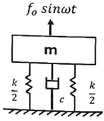
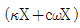
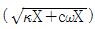
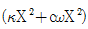
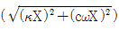
(정답률: 50%)
80. 기계기초나 건물기초의 고유진동수를 작게 하기 위해서 토양의 지지압력은?
- 토양의 지지압력을 크게 하면 된다.
- 토양의 지지압력을 적게 하면 된다.
- 토양의 지지압력과 관계 없다.
- 토양의 지지압력을 일정히 한다.
(정답률: 30%)
5과목: 소음진동 관계 법규
81. 소음·진동관리법령상 특정공사 사전신고를 한 자가 변경신고를 하기 위한 사항 중 “환경부령으로 정하는 중요한 사항”에 해당하지 않는 것은?
- 특정공사 사전신고 대상 기계·장비의 10퍼센트 이상의 증가
- 특정공사 기간의 연장
- 공사 규모의 10퍼센트 이상 확대
- 소음·진동 저감대책의 변경
(정답률: 43%)
82. 소음·진동관리법령상 이 법의 목적을 가장 적합하게 표현한 것은?
- 소음·진동에 관한 국민의 권리·의무와 국가의 책무를 명확히 정하여 지속가능하게 개발·관리·보전함을 목적으로 한다.
- 공장·건설공사장·도로·철도 등으로부터 발생하는 소음·진동으로 인한 피해를 방지하고 소음·진동을 적정하게 관리하여 모든 국민이 조용하고 평온한 환경에서 생활할 수 있게 함을 목적으로 한다.
- 소음·진동으로 인한 국민건강이나 환경에 관한 위해(危害)를 예방하고 국가가 보건환경활동을 활발하게 수행할 수 있게 하는 것을 목적으로 한다.
- 사업활동 등으로 인하여 발생하는 소음·진동의 피해를 방지하고, 공공사업자 및 개인사업자가 지속발전 가능한 개발사업을 활발하게 영위하는 것을 목적으로 한다.
(정답률: 40%)
83. 소음·진동관리법령상 소음발생건설기계 중 굴착기의 출력기준으로 옳은 것은?
- 정격출력 500kW 초과
- 정격출력 19kW 이상 500kW 미만
- 정격출력 19kW 미만
- 휴대용을 포함하며, 중량 5톤 이하
(정답률: 알수없음)
84. 환경정책기본법령상 환경부장관은 확정된 국가환경종합계획의 종합적·체계적 추진을 위하여 몇 년마다 환경보존중기종합계획을 수립하여야 하는가?
- 3년
- 5년
- 7년
- 10년
(정답률: 46%)
85. 소음·진동관리법령상 자동차의 종류에 관한 기준으로 옳지 않은 것은? (단, 2006년 1월 1일부터 제작되는 자동차 기준이다.)
- 이륜자동차에는 뒤 차붙이 이륜자동차 및 이륜차에서 파생된 3륜 이상의 최고속도 40km/h를 초과하는 이륜자동차를 포함한다.
- 화물자동차에 해당되는 건설기계의 종류는 환경부장관이 정하여 고시한다.
- 빈 차 중량이 0.5톤 이상인 이륜자동차는 경자동차로 분류한다.
- 승용자동차에는 지프(JEEP)·왜건(WAGON) 및 승합차를 포함한다.
(정답률: 50%)
86. 소음·진동관리법령상 특정공사의 사전신고 대상 기계·장비에 해당하지 않는 것은?
- 휴대용 브레이커
- 발전기
- 공기압축기(공기토출량이 분당 2.83세제곱미터 이상의 이동식인 것으로 한정한다)
- 압입식 항타항발기
(정답률: 54%)
87. 소음·진동관리법령상 거짓이나 부정한 방법으로 배출시설 설치신고를 하고 배출시설을 설치한 자에 대한 벌칙기준은?
- 3년 이하의 징역 또는 1천500만원 이하의 벌금
- 1년 이하의 징역 또는 1천만원 이하의 벌금
- 6개월 이하의 징역 또는 500만원 이하의 벌금
- 300만원 이하의 과태료
(정답률: 17%)
88. 소음·진동관리법령상 규정에 의한 환경기술인을 임명하지 아니한 경우의 행정처분기준의 순서로 옳은 것은? (단, 1차-2차-3차-4차 위반순이다.)
- 경고-조업정지 5일-조업정지 10일-조업정지 30일
- 경고-조업정지 10일-조업정지 30일-허가취소
- 환경기술인 선임명령-경고-조업정지 5일-조업정지 10일
- 환경기술인 선임명령-조업정지 5일-조업정지 10일-경고
(정답률: 55%)
89. 소음·진동관리법령상 진동방지시설로 가장 거리가 먼 것은?
- 탄성지지시설 및 제진시설
- 배관진동 절연장치 및 시설
- 방진터널시설
- 방진구시설
(정답률: 47%)
90. 다음은 소음·진동관리법령상 생활소음의 규제기준이다. ( )안에 알맞은 것은?
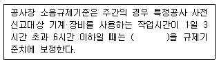
- +1dB
- +3dB
- +5dB
- +10dB
(정답률: 47%)
91. 다음은 소음·진동관리법령상 과태료 부과기준중 일반기준에 관한 설명이다. ( )안에 가장 적합한 것은?
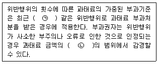
- ㉠ 1년간, ㉡ 10분의 1
- ㉠ 1년간, ㉡ 2분의 1
- ㉠ 2년간, ㉡ 10분의 1
- ㉠ 2년간, ㉡ 2분의 1
(정답률: 55%)
92. 소음·진동관리법령상 환경부장관은 인증시험대챙기관이 다른 사람에게 자신의 명의로 인증시험을 하게 하는 행위를 한 경우에는 그 지정을 취소하거나 기간을 정하여 업무의 전부나 일부의 정지를 명할 수 있는데, 이 때 명할 수 있는 업무정지 기간은?
- 6개월 이내의 기간
- 1년 이내의 기간
- 1년 6개월 이내의 기간
- 2년 이내의 기간
(정답률: 27%)
93. 소음·진동관리법령상 측정망 설치계획을 고시할 때 포함되지 않아도 되는 사항은?
- 측정망의 설치시기
- 측정망의 배치도
- 측정망의 수
- 측정소를 설치한 건축물의 위치 및 면적
(정답률: 30%)
94. 소음·진동관리법령상 방지시설을 설치하여야 하는 사업장이 방지시설을 설치하지 아니하고 배출시설을 가동한 경우의 2차 행정처분 기준은?
- 조업정지
- 사용금지명령
- 폐쇄명령
- 허가취소
(정답률: 28%)
95. 환경정책기본법령상 용어의 정의 중 “일정한 지역에서 환경오염 또는 환경훼손에 대하여 환경이 스스로 수용, 정화 및 복원하여 환경의 질을 유지할 수 있는 한계”를 뜻하는 것은?
- 환경순화
- 환경기준
- 환경용량
- 환경영향한계
(정답률: 55%)
96. 소음·진동관리법령상 거짓의 소음도표지를 붙인 장에 대한 벌칙기준은?
- 6개월 이하의 징역 또는 500만원 이하의 벌금
- 1년 이하의 징역 또는 1천만원 이하의 벌금
- 3년 이하의 징역 또는 1천500만원 이하의 벌금
- 100만원 이하의 과태료
(정답률: 39%)
97. 환경정책기본법령상 소음의 환경기준으로 옳은 것은?
- 낮 시간대 일반지역의 녹지지역 : 50 LeqdB(A)
- 낮 시간대 도로변지역의 녹지지역 : 50 LeqdB(A)
- 밤 시간대 일반지역의 녹지지역 : 50 LeqdB(A)
- 밤 시간대 도로변지역의 녹지지역 : 50 LeqdB(A)
(정답률: 43%)
98. 소음·진동관리법령상 운행차 정기검사의 방법·기준 및 대상 항목에서 소음도 측정 중 배기소음 측정 검사방법으로 옳은 것은?
- 자동차의 변속장치를 중립 위치로 하고 정지가동상태의 원동기의 최고 출력 시의 100% 회전속도로 10초 동안 운전하여 최대소음도를 측정한다.
- 자동차의 변속장치를 운행 위치로 하고 정지가동상태에서 원동기의 최고 출력 시의 85% 회전속도로 10초 동안 운전하여 최대소음도를 측정한다.
- 자동차의 변속장치를 운행 위치로 하고 정지가동상태에서 원동기의 최고 출력 시의 80% 회전속도로 5초 동안 운전하여 최대소음도를 측정한다.
- 자동차의 변속장치를 중립 위치로 하고 정지가동상태에서 원동기의 최고 출력 시의 75% 회전속도로 4초 동안 운전하여 최대소음도를 측정한다.
(정답률: 50%)
99. 소음·진동관리법령상 운행자동차의 경적소음 허용기준으로 옳은 것은? (단, 2006년 1월 1일 이후에 제작되는 자동차이며, 중대형 승용자동차 기준이다.)
- 100 dB(C) 이하
- 1⑤ dB(C) 이하
- 110 dB(C) 이하
- 112 dB(C) 이하
(정답률: 46%)
100. 소음·진동관리법령상 인증을 면제할 수 있는 자동차에 해당하는 것은?
- 박람회용 전시 자동차
- 국가대표 선수용으로 사용하기 위하여 반입하는 자동차로서 문화체육관광부장관의 확인을 받은 자동차
- 외국에서 국내의 비영리단체에 무상으로 기증하여 반입하는 자동차
- 항공기 지상조업용으로 반입하는 자동차
(정답률: 50%)
La = 20log10(a/a0)
여기서 a는 계측된 진동의 진동가속도, a0은 기준진동의 가속도실효치이다.
주어진 값에 대입하면,
a = (2πf)2s = (2π×10)2×0.001 = 0.1257m/s2
La = 20log10(0.1257/10-5) ≈ 73dB
따라서 정답은 "73"이다.